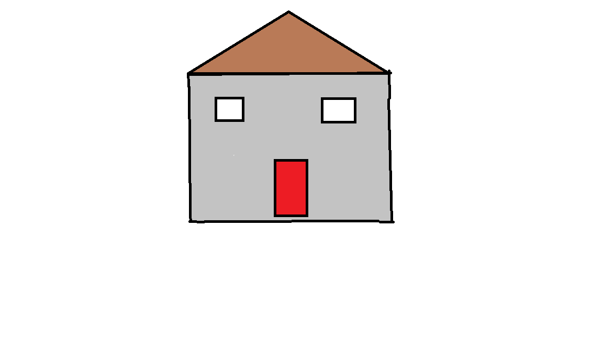
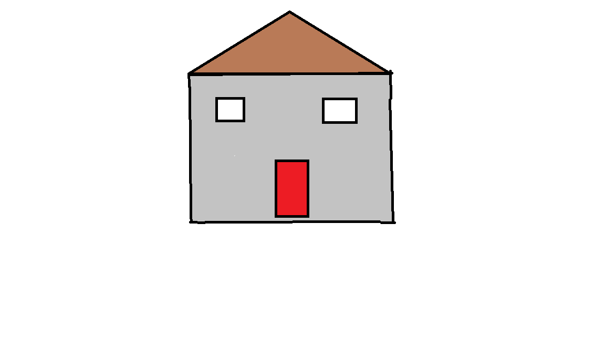

|  |
Monasterio de Oia:es un antiguo monasterio cisterciense fundado en el siglo XII
Ruta maxica de Oia:está en torno a los 20 km y transcurre entre los 100 y los 300 m sobre el nivel del mar.
Pozas de Mougas:estan formadas por pequeños rios que descienden de manera vertiginosa hacia el mar
Centro de Talasoterapia:a diferencia de los balnearios de aguas termales, sólo utiliza el agua de mar y los elementos que generan su entorno
|  |